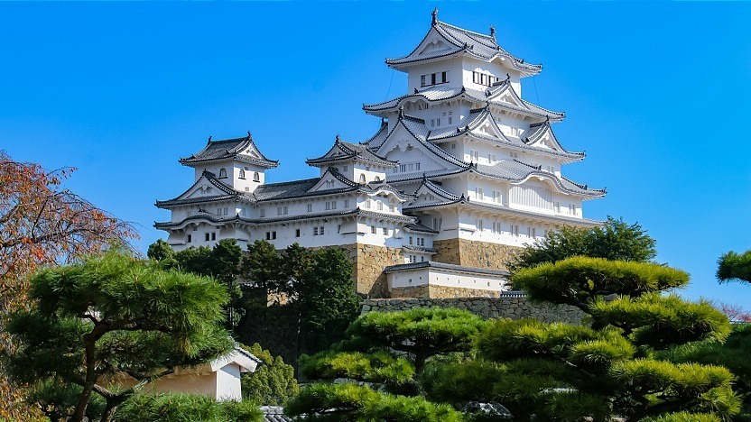

Destination - Land of the Rising Sun
Why I want to go
My dad was in the Air Force and would always tell stories about where he was stationed. His favorite place to talk about was Japan, and of course, it quickly became my dream destination. The history and culture are so interesting that I've even started learning the language. こんにちは👋 Learning about Japan from a distance is great, but experiencing everything firsthand would be an entirely different level of amazing.
Where I would visit
...if I had to list my top 5 destinations.
1. Himeji Castle
As you continue reading, you'll notice a clear theme: I love nature! 🍃🌻 Although not a garden, river, or mountain, this castle is too beautiful to miss. I first saw Himeji Castle while watching NHK, and ever since, it has been the number one place I would like to visit.
2. Kyoto Gyoen National Garden
3. Mt. Fuji
Fuji-san! 🗻 You can't go to Japan and not see one of the most iconic mountains in the world. Unfortunately, I'm not much of a climber. However, that's not going to stop me from getting as close as possible and checking out the best spots for viewing.
4. Takachiho Gorge
It's estimated that this was formed over 100,000 years ago. Such a spectacular sight! You can also rent a small boat and paddle down the river. The view from the walking path looks amazing too. I would love to pack a lunch and spend the day here.
5. Arashiyama Bamboo Grove

I've read that the Arashiyama Bamboo Grove can get pretty busy with a lot of foot traffic, and that the best time to visit is early in the morning. The good news is that it is open 24 hours a day! I think it could be pretty cool to visit at night too. 🤔
Realistically...
These five attractions are really only the tip of the iceberg when it comes to everything I would like to see and experience on my trip. 🚅 Also, geographically, they are quite spread out. This could make planning a route a bit challenging. 🚠So hopefully, with time, patience, and careful planning, in the near future, I'll be able to visit all of these places and more.